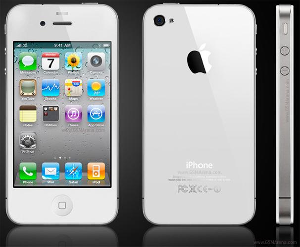

At young age I fell in love with playing games on a variety of consoles,
like the PlayStation, PCs, and the Nintendo DSI. I remember playing games such as Team
Fortress, Buzz! Junior Jungle Party, Super Mario, and others. Then as technology grew and
evolved, I was gifted my first phone, an iPhone 4.
It was only meant for calls and messages;
however, I downloaded a large number of games and music apps that I still use to currently.
Through this I became very curious in how games were made, what people used to make them and
the overall creative process.

Why It?
In no way did I believe I was someone who could pursue IT as a future job because of how male dominated
the industry and how intimidating and difficult it seemed to learn to code. Further, I imagined a career
in IT would involve me sitting by myself in a small room for 9-10 hours; with no room for creativity and
teamwork.
Nevertheless, as I researched more into the jobs, I saw there were heaps in the industry that
allowed me to express my creativity and allowed me to interact with the client, work colleagues and/or
work alone. A Web Developer and Software Engineer are two careers that aim to have at the end of my degrees
and grow towards, as they both involve room to creativity and offer to work in groups.
Why RMIT?
At the beginning of 2022 I undertook a Bachelor of Information Technology and Business at Monash, I was able
to gain some experience in Java and Object-Oriented Programming, Binary numbers, Networks and Cybersecurity.
Although Monash was a great learning environment, I was experiencing a lot of personal and family issues that
led to more difficult circumstances because of Monash’s lack of support. Therefore, I decided to discontinue my
course from Monash and try a different Uni. I choose to apply at RMIT as it was my second preference on my VTAC
course preference list, also, I admired the units and the learning content. At the end of my degree, I expect to
have the basic skills to start a my own project and/or join a company, whilst continuing to learn and grow throughout
my career and maybe become a software engineer .